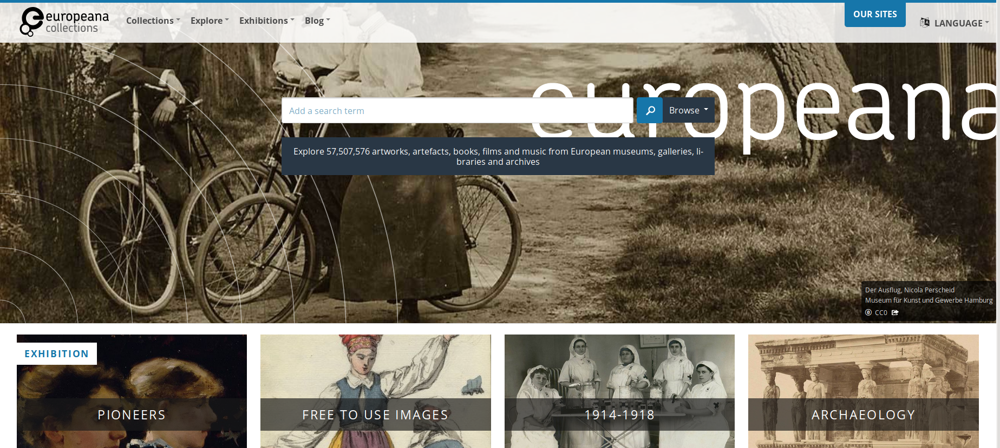

Modelling the writing process.
Gustave Roud,
from the diary to the work,
from the document to the networks
GENESIS – CRACOW 2019
Alessio Christen, Elena Spadini (Université de Lausanne)
Presentation online at: elespdn.github.io/talks/20190612_Krakow/20190612_Krakow.html
Alessio Christen, Elena Spadini (Université de Lausanne)
Presentation online at: elespdn.github.io/talks/20190612_Krakow/20190612_Krakow.html
Table of contents
- Genetic networks
- Semantic web for genetic criticism
- Gustave Roud
- Modelling genetic networks
- Conclusions
1. Genetic networks

Les manuscrits de Madame Bovary. Tableaux génétique des brouillons

Hermann Burger, Lokalbericht. Digitale Edition. Das genetische Dossier
“ Ce qui est sans doute à retenir de cette experience [avec le logiciel Storyspace] [...] c'est la nécessité de nommer les liens et de prévoir des carrefours de liens „
Daniel Ferrer, « La représentation hypertextuelle des manuscrits. Quelques leçons de douze années d'expériences », L'Edition du manuscrit. De l'archive de création au scriptorium numérique, éd. A. Crasson, 2008
2. Semantic web
for genetic criticism
Relationships between genetic entities
variants
🠿
graph data-model
🠿
semantic web technologies
🠽
external constraints
Semantic web. A web of linked data
The Semantic Web provides a common framework that allows data to be shared and reused across application, enterprise, and community boundaries (W3C). Data are organized following rules defined in shared ontologies, which allows the query of big corpora and inferences.
|  | Example: Europeana Other examples: governments (data.gov.uk), libraries (data.bnf.fr), web searches (Google Knowledge Graph), bio-medical resources (The Gene Ontology Resource |
Semantics in RDF triple
| subject | ⎯ predicate ➝ | object |
Dataset
| ms BJ Rkp. Przyb. 9/19 | ⎯ has author ➝ | Wisława Szymborska |
| ms BJ Rkp. Przyb. 9/19 | ⎯ is preserved in ➝ | Biblioteka Jagiellońska |
| ms BJ Rkp. Przyb. 9/19 | ⎯ has digital copy identifier ➝ | NDIGORP042968 |
Ontology (rules)
| manuscript | ⎯ has author ➝ | person |
| manuscript | ⎯ is preserved in ➝ | library |
| manuscript | ⎯ has digital copy identifier ➝ | id |
3. Gustave Roud

|
Gustave Roud (1897-1976)
Complete works Dir. by Claire Jaquier and Daniel Maggetti Researchers: Alessio Christen, Bruno Pellegrino, Elena Spadini, Julien Burri, Raphaëlle Lacord |
Exemple.
Air de la solitude

4. Modelling genetic networks
Classes (subject / object)
| △ | Diary |
| ▭ | Avantexte |
| ○ | Genetic dossier |
| ◇ | Publication |
Properties
roud-œuvres:isPartOf
| ▭ Avantexte |
→ | ○ Genetic Dossier |
roud-œuvres:isBefore
| ▭ Avantexte |
→ | ▭ Avantexte |
roud-œuvres:resultsIn
| ○ Genetic Dossier |
→ | ◇ Publication |
roud-œuvres:rewrittenIn
| △ Diary (feuilles,petit carnets, etc.) |
→ | △ Diary (cahiers, etc.) |
roud-œuvres:reusedIn
| △ ◇ Diary or Publication |
→ | ○ Genetic Dossier |
5. Conclusions
Proposal
Genetic networks
of typed relationships,
general and explicit enough
of typed relationships,
general and explicit enough
To do
- apply to more use cases and refine the model
- discuss with the community
Alessio Christen, Elena Spadini, "Modelling the writing process", GENESIS - CRACOW 2019.

Photos: copyright AGR - CLSR (UNIL)
Photos: copyright AGR - CLSR (UNIL)